For Home AssistantFür Home Assistant
A calm, photo-backed dashboard that sets itself up. Shape the rest room by room in a visual studio. No YAML.Ein ruhiges Dashboard mit Raumfotos, das sich selbst einrichtet. Den Rest gestaltest du Raum für Raum in einem visuellen Studio. Ohne YAML.
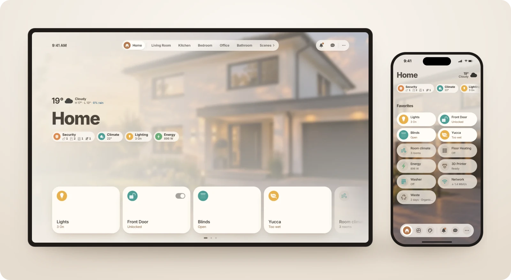
Just arrivedGerade neu
Community cards come with every Casora release and wait in the Studio until you add them, so your tile list stays short.Community-Karten kommen mit jedem Casora-Release und warten im Studio, bis du sie hinzufügst. So bleibt deine Kachelliste kurz.
Live view with what Frigate detected last. The popup has alerts and detections with clip, download, share and favourite, the recordings of the last days with a timeline, the objects and the camera switches.Livebild mit dem, was Frigate zuletzt erkannt hat. Das Popup zeigt Alarme und Erkennungen mit Clip, Download, Teilen und Favorit, die Aufnahmen der letzten Tage mit Zeitleiste, die Objekte und die Kamera-Schalter.
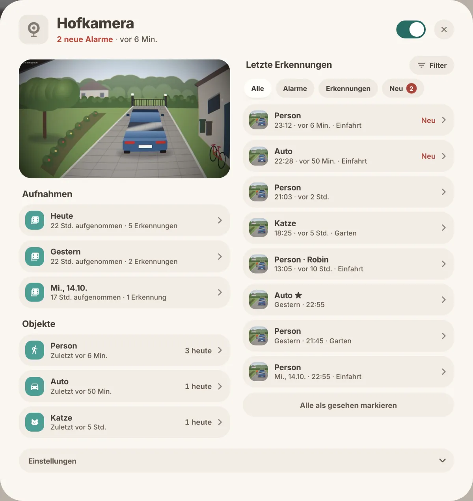
Live picture that says when someone rang. Listen in, send a quick reply, sound the siren and see who rang lately.Livebild, das sagt, wann jemand geklingelt hat. Mithören, Schnellantwort senden, Sirene auslösen und sehen, wer zuletzt geklingelt hat.
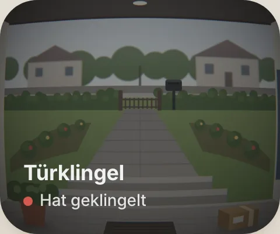
Ready, heating up or brewing with progress, and what the machine needs: water, beans, drip tray, descaling. Start drinks from the popup.Bereit, heizt auf oder brüht mit Fortschritt, und was die Maschine braucht: Wasser, Bohnen, Tropfschale, Entkalken. Getränke startest du im Popup.
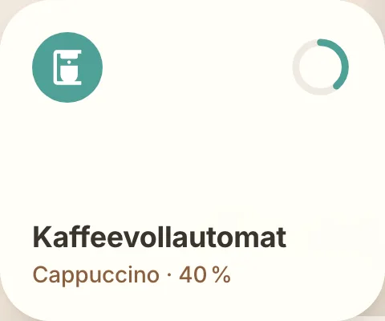
Mowing, parked or trapped, the battery as a ring, to station, mow and park, and the mowing time of the last 7 days. Extra details for Gardena.Mäht, parkt oder steckt fest, der Akku als Ring, zur Station, Mähen und Parken, und die Mähzeit der letzten 7 Tage. Mehr Details bei Gardena.
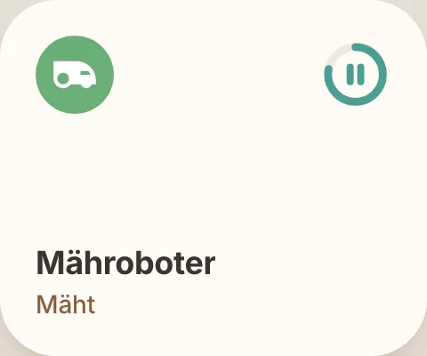
Frosted glass over your room photos, light and dark. The third Casora design, next to Casora and Casora Nebel.Milchglas über deinen Raumfotos, hell und dunkel. Das dritte Casora-Design, neben Casora und Casora Nebel.
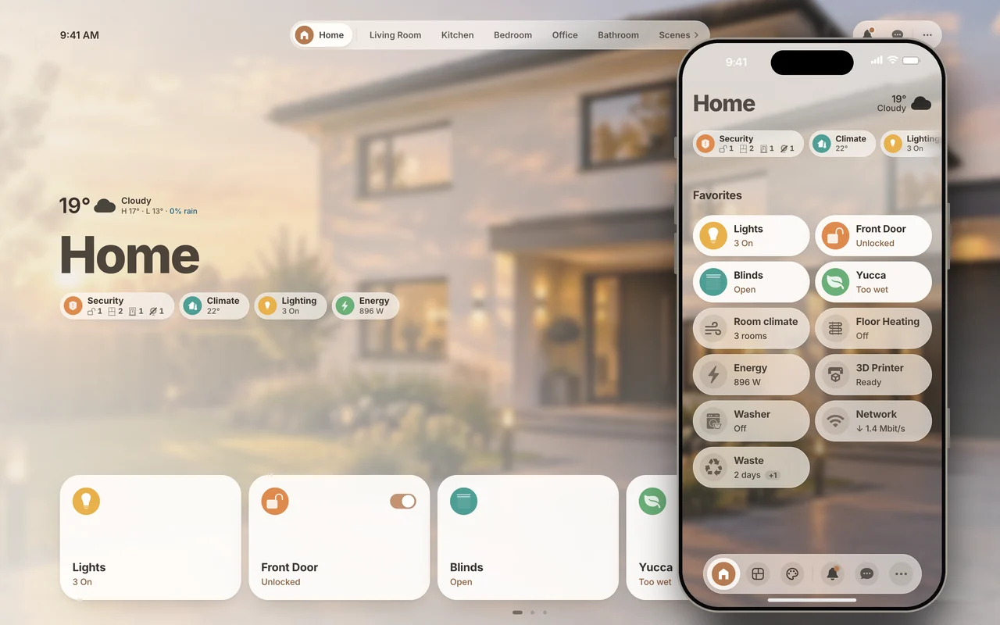
Missing a card for one of your devices? Request it in the Studio under Community. It may become a card for everyone.Fehlt dir eine Karte für eines deiner Geräte? Wünsch sie dir im Studio unter Community. Vielleicht wird sie eine Karte für alle.
SetupEinrichtung
Casora reads Home Assistant's device registry, puts every device into its room and groups what belongs together. Your first dashboard is ready before you have touched a single tile.Casora liest die Geräteliste von Home Assistant, ordnet jedes Gerät seinem Raum zu und fasst zusammen, was zusammengehört. Dein erstes Dashboard steht, bevor du eine einzige Kachel angefasst hast.
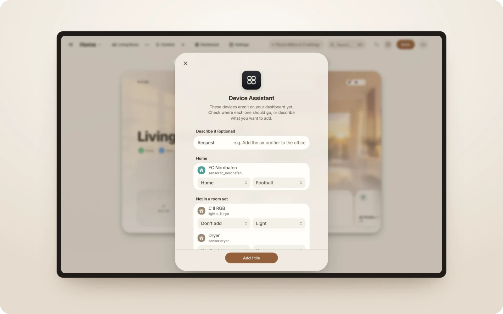
Desktop, tablet, phoneDesktop, Tablet, Handy
Every screen gets a layout made for it. Not a shrunken copy.Jeder Bildschirm bekommt ein eigenes Layout. Keine verkleinerte Kopie.
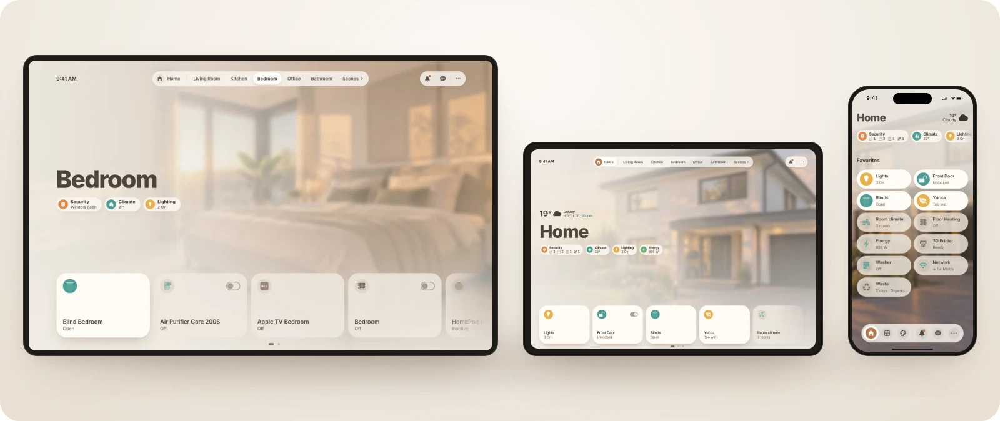
A full photo of each room, with its devices right below and every room one tap away.Ein großes Foto für jeden Raum, die Geräte direkt darunter und jeder Raum nur einen Tipp entfernt.
Large tiles, readable from across the room, and a look that stays calm all day.Große Kacheln, auch von der anderen Seite des Raums lesbar, und eine Optik, die den ganzen Tag ruhig bleibt.
A layout of its own, with the things you use most at the top and a navigation bar under your thumb. Tiles can grow while something is going on and shrink again after.Ein eigenes Layout, mit dem, was du am meisten nutzt, ganz oben und einer Navigationsleiste unter dem Daumen. Kacheln können groß werden, solange etwas läuft, und danach wieder klein.
Popups
Lights, climate, energy, locks, blinds, plants, washers and dryers each open a popup of their own. Controls on the left, devices on the right, the rarely used tucked away under More.Licht, Klima, Energie, Schlösser, Jalousien, Pflanzen, Waschmaschine und Trockner öffnen jeweils ein eigenes Popup. Links die Steuerung, rechts die Geräte, Seltenes liegt unter Mehr.
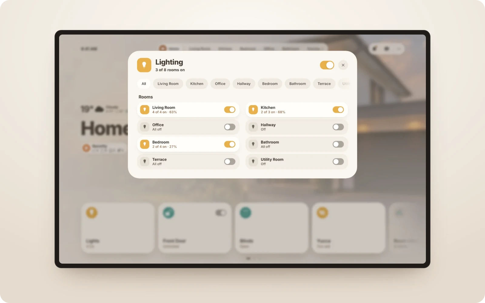
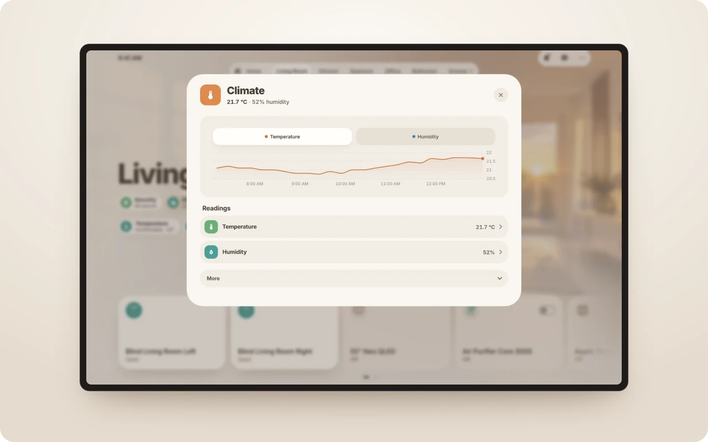
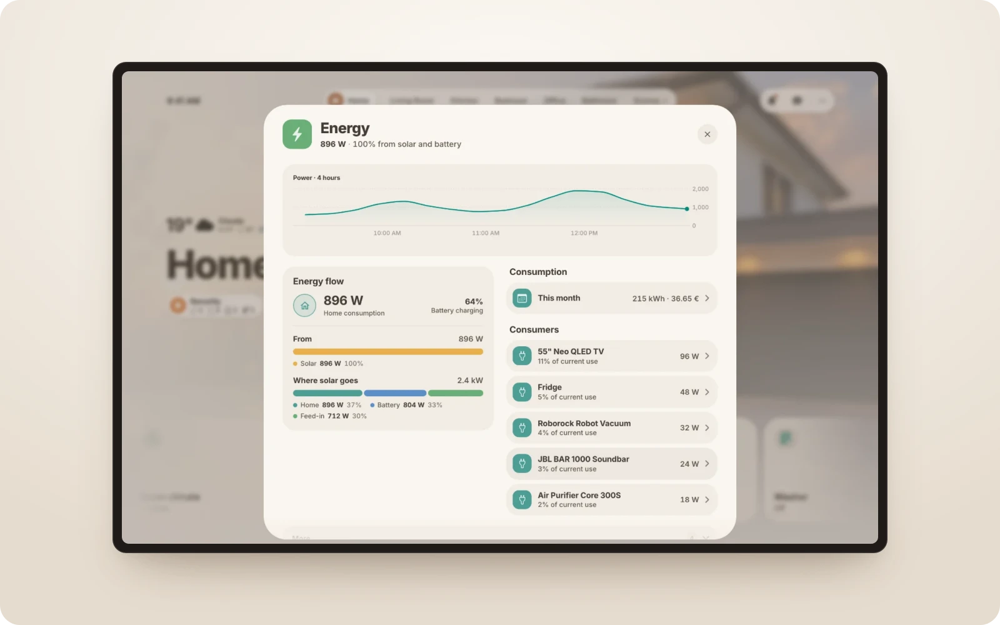
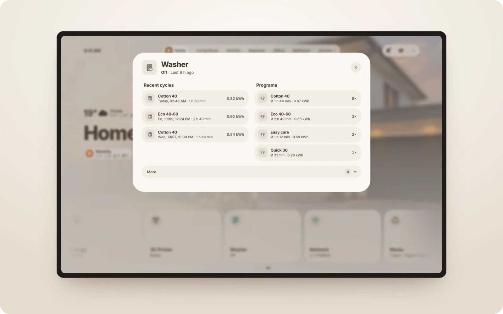
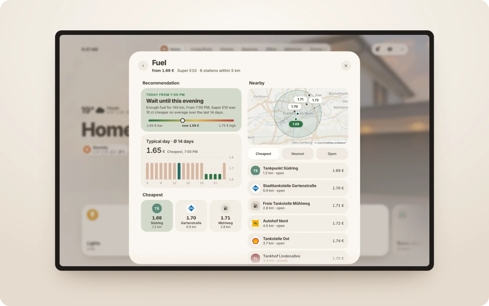
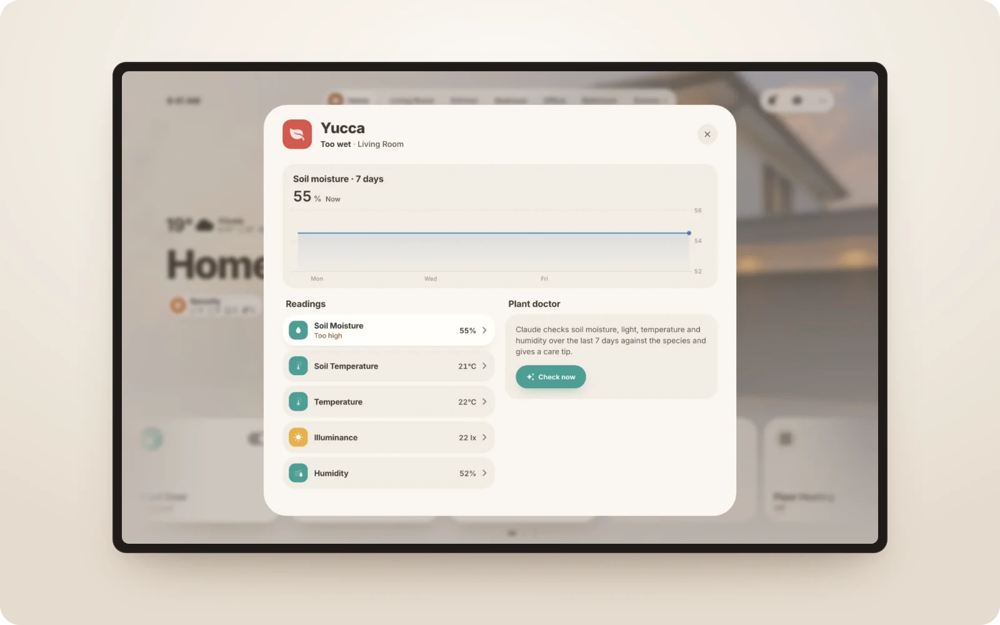
Press and holdGedrückt halten
The everyday actions should not need a popup. Press and hold any tile and a small menu opens right at the tile, a bottom sheet on the phone, a right-click on the desktop.Das Alltägliche soll kein Popup brauchen. Halte eine Kachel gedrückt, und ein kleines Menü öffnet sich direkt an der Kachel. Am Handy von unten, am Desktop auch per Rechtsklick.
The main action on top: turn off, unlock, pause. Below it brightness and colour, cover position, temperature, volume and tracks, fan speed. Then history, device and "Edit tile", which jumps straight into the Studio.Oben die Hauptaktion: Ausschalten, Entriegeln, Pause. Darunter Helligkeit und Farbe, Jalousie-Position, Temperatur, Lautstärke und Titel, Lüfterstufe. Dann Verlauf, Gerät und „Kachel bearbeiten“, das direkt ins Studio springt.
"Turn off in 30 minutes" or "Turn on for 2 hours" for lights, switches, fans, heating and media. The tile shows a ring with a clock that empties over time. Timers survive a restart and step aside the moment you switch by hand.„In 30 Minuten aus“ oder „Für 2 Stunden an“ für Licht, Schalter, Lüfter, Heizung und Medien. Die Kachel zeigt einen Ring mit Uhr, der sich mit der Zeit leert. Zeitschalter überstehen einen Neustart und treten zurück, sobald du von Hand schaltest.
A reading opens its chart with 24 hours, 7 or 30 days, highest, lowest and average. A window contact shows when it was open. A device opens its device page. Each with a back arrow, instead of Home Assistant's dialog.Ein Messwert öffnet sein Diagramm mit 24 Stunden, 7 oder 30 Tagen, Höchst-, Tiefst- und Mittelwert. Ein Fensterkontakt zeigt, wann er offen war. Ein Gerät öffnet seine Geräteseite. Alles mit Zurück-Pfeil, statt des Home-Assistant-Dialogs.
TilesKacheln
Casora picks the right tile and popup for each device on its own, with the integrations you already have.Casora wählt für jedes Gerät selbst die passende Kachel und das passende Popup, mit den Integrationen, die du schon hast.
Lights, switches, scenes, blinds, locks, thermostats and room climate, fans, air purifiers, humidifiers, media players, cameras and doorbellsLicht, Schalter, Szenen, Jalousien, Schlösser, Thermostate und Raumklima, Ventilatoren, Luftreiniger, Luftbefeuchter, Medien, Kameras und Klingeln
Alarm system, doors and windows, smoke, water and gas sensors, official warningsAlarmanlage, Türen und Fenster, Rauch-, Wasser- und Gasmelder, amtliche Warnungen
Energy with solar and home battery, batteries of all devices, network, updates, waste collection, calendar, PulseEnergie mit Solar und Hausakku, Batterien aller Geräte, Netzwerk, Updates, Abfall, Kalender, Pulse
Washing machine, dryer, dishwasher, robot vacuum, 3D printerWaschmaschine, Trockner, Geschirrspüler, Saugroboter, 3D-Drucker
Car with fuel prices nearby, e-bike, plants, aquariums, football, game activity, recipe of the weekAuto mit Spritpreisen in der Nähe, E-Bike, Pflanzen, Aquarien, Fußball, Spiele-Aktivität, Rezept der Woche
Frigate camera, Reolink doorbell, coffee machine, robot lawn mower. Plus any Home Assistant card as a custom tile.Frigate-Kamera, Reolink-Klingel, Kaffeemaschine, Mähroboter. Dazu jede Home-Assistant-Karte als eigene Kachel.
Casora Studio
A visual editor in the Home Assistant sidebar. Rooms, tiles, badges and popups, changed in place with a live preview for desktop, tablet and phone.Ein visueller Editor in der Seitenleiste von Home Assistant. Räume, Kacheln, Badges und Popups änderst du direkt, mit Live-Vorschau für Desktop, Tablet und Handy.
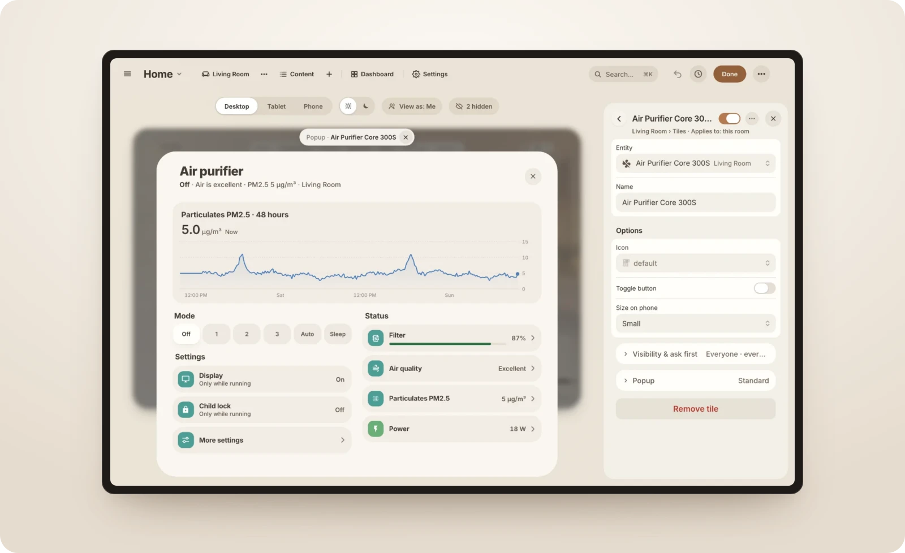
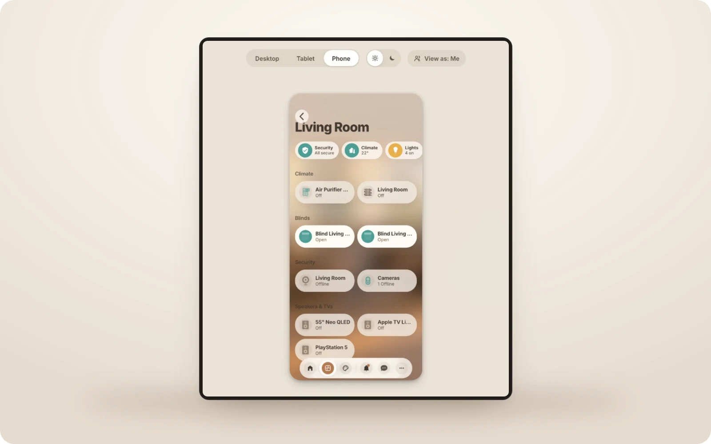
Switch the preview between desktop, tablet and phone. Nothing is written until you click Save, and a draft survives a reload.Schalte die Vorschau zwischen Desktop, Tablet und Handy um. Gespeichert wird erst, wenn du auf Speichern klickst, und ein Entwurf übersteht auch ein Neuladen.
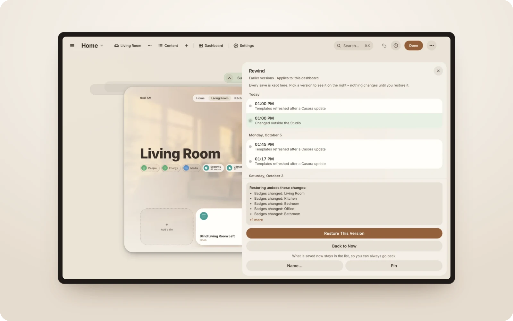
Every save becomes a version. Preview any earlier one and restore it with a click. Nothing is ever lost.Jedes Speichern wird zu einer Version. Sieh dir jede frühere an und stell sie mit einem Klick wieder her. Nichts geht verloren.
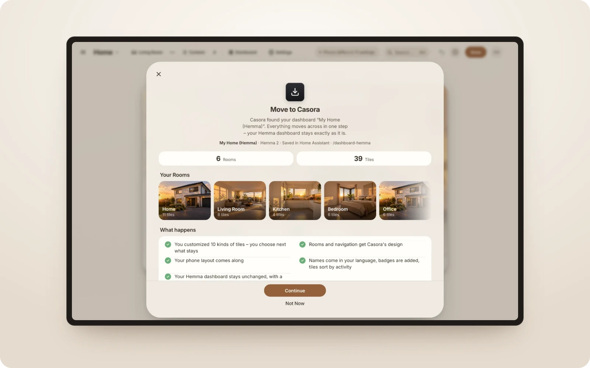
The device assistant spots what is new in your home and suggests the room and the tile. You decide.Der Geräte-Assistent erkennt, was neu bei dir ist, und schlägt Raum und Kachel vor. Du entscheidest.
Three designsDrei Designs
Warm linen, generous corners and gentle shadows, set in Inter. All three designs follow Home Assistant between light and dark.Warmes Leinen, großzügige Ecken und sanfte Schatten, in Inter gesetzt. Alle drei Designs folgen Home Assistant zwischen hell und dunkel.
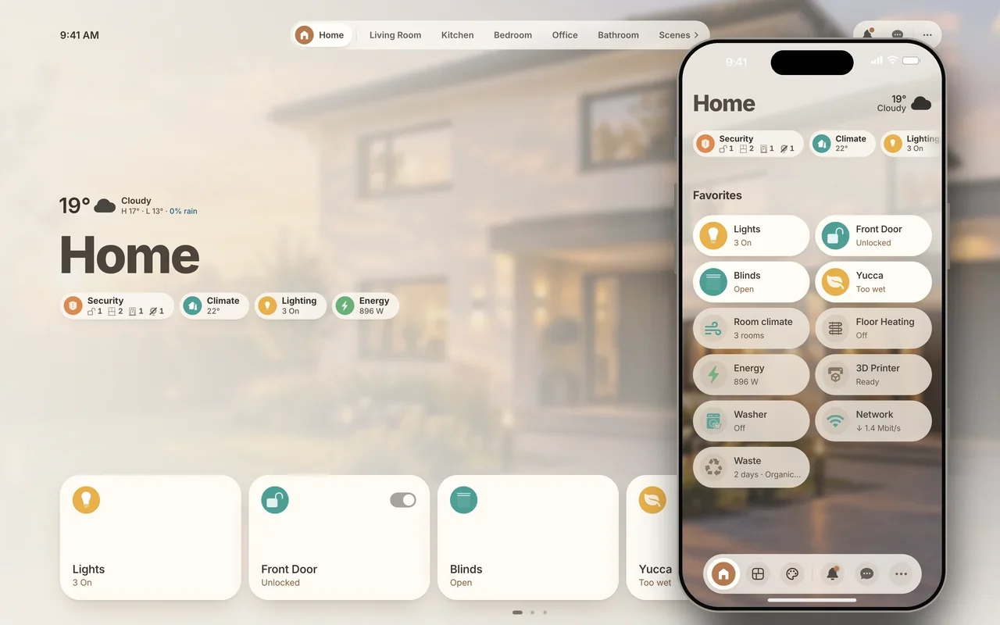
Casora. The default. Warm linen and sand, large corners, soft shadows.Casora. Der Standard. Warmes Leinen und Sand, große Ecken, weiche Schatten.
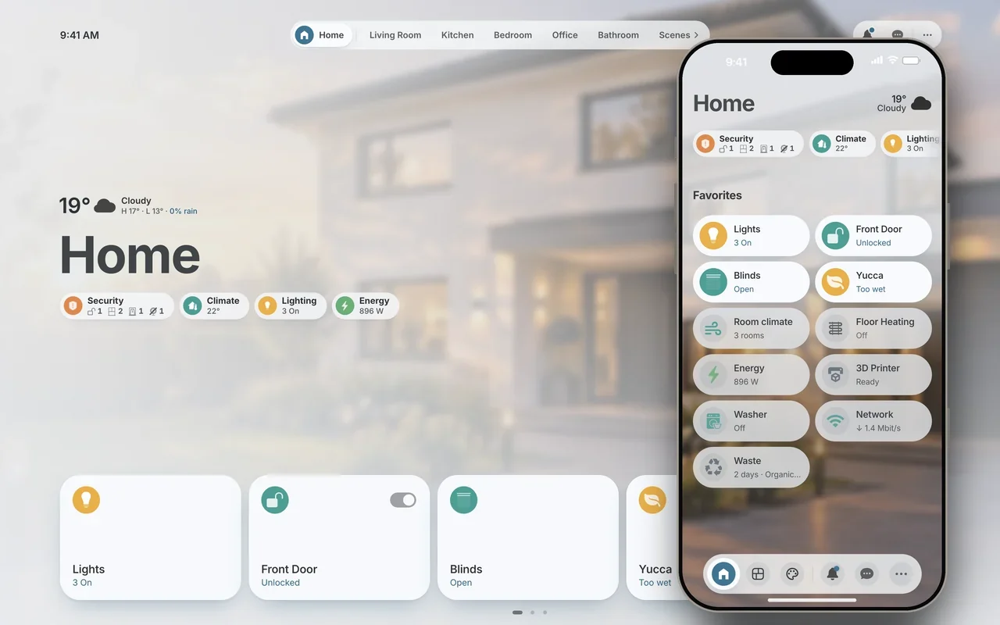
Casora Nebel. The same calm design in cool grey with a petrol accent.Casora Nebel. Dasselbe ruhige Design in kühlem Grau mit Petrol-Akzent.
Casora Glas. Frosted glass over your room photos. In performance mode the glass turns opaque for older tablets.Casora Glas. Milchglas über deinen Raumfotos. Im Leistungsmodus wird das Glas für ältere Tablets deckend.
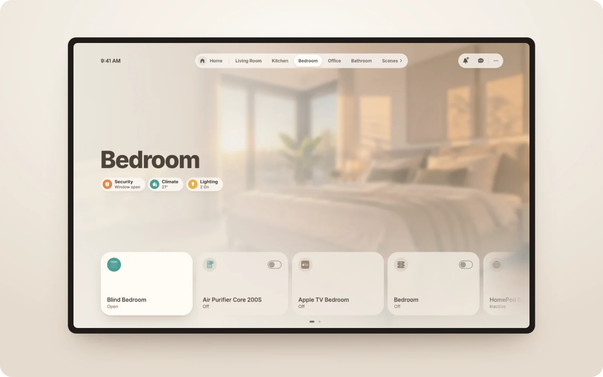
Coming from HemmaUmstieg von Hemma
Casora finds your Hemma dashboards and carries over rooms, tiles, the phone layout and your own cards. Your old dashboard stays untouched.Casora findet deine Hemma-Dashboards und übernimmt Räume, Kacheln, das Handy-Layout und deine eigenen Karten. Dein altes Dashboard bleibt unverändert.
InstallInstallation
The setup assistant takes it from there.Den Rest übernimmt der Einrichtungsassistent.
https://github.com/SH1FT-W/casoraUpdates arrive through HACS like any other integration. Casora saves a version of your dashboards first and never restarts Home Assistant on its own.Updates kommen wie bei jeder anderen Integration über HACS. Casora speichert vorher eine Version deiner Dashboards und startet Home Assistant nie von selbst neu.
Casora checks this for you on first start.Casora prüft das beim ersten Start für dich.
Use UIX instead of card-mod, not both. Helpers, scripts, resources and the theme are created by Casora itself.Nutze UIX statt card-mod, nicht beides. Helfer, Skripte, Ressourcen und das Theme legt Casora selbst an.
Download the latest release, copy its custom_components/casora folder into /config/custom_components/, restart Home Assistant and add the Casora integration. New versions then show up under Settings, Updates.Lade das neueste Release herunter, kopiere den Ordner custom_components/casora nach /config/custom_components/, starte Home Assistant neu und füge die Integration Casora hinzu. Neue Versionen erscheinen dann unter Einstellungen, Updates.
Versions count year.month.number: 26.10.31 is the 31st release of October 2026.Versionen zählen Jahr.Monat.Nummer: 26.10.31 ist das 31. Release im Oktober 2026.
PrivacyDatenschutz
Casora runs entirely inside your Home Assistant. No account, no analytics, no telemetry.Casora läuft komplett in deinem Home Assistant. Kein Konto, keine Analyse, keine Telemetrie.
Dashboards, versions and settings live on your own instance and are part of its regular backups.Dashboards, Versionen und Einstellungen liegen auf deiner eigenen Instanz und sind Teil ihrer normalen Backups.
AI features stay off until you turn them on, and then use the provider you already set up in Home Assistant.KI-Funktionen bleiben aus, bis du sie einschaltest, und nutzen dann den Anbieter, den du in Home Assistant schon eingerichtet hast.
With an AI task set up, Casora adds a few helpers to the dashboard. Each one shows its cost estimate first, and each has its own schedule: off, automatic or a time you pick.Mit einer eingerichteten KI-Aufgabe ergänzt Casora das Dashboard um ein paar Helfer. Jeder zeigt vorher seine geschätzten Kosten und hat einen eigenen Zeitplan: aus, automatisch oder zu einer Uhrzeit deiner Wahl.
Credits
Casora is built on Hemma by Will Sanderson, which grew out of Homio by @iamtherufus. Thank you both.Casora baut auf Hemma von Will Sanderson auf, das aus Homio von @iamtherufus entstanden ist. Danke euch beiden.